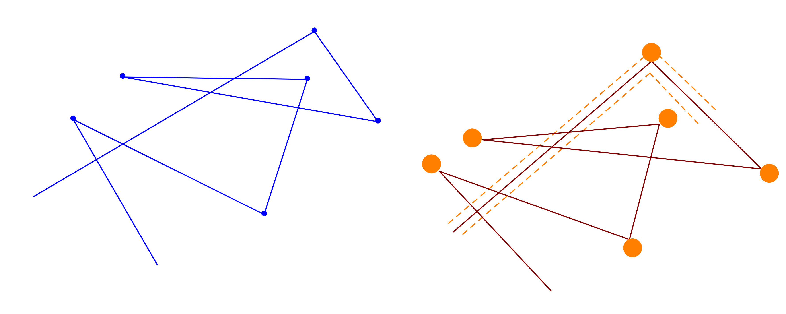
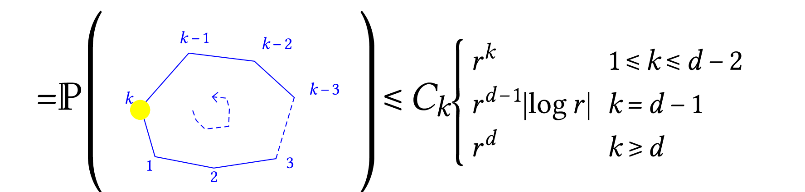

Probability seminar 20181009 Balint Toth
(joint work with Chris Lutsko)
Invariance principle for the random Lorenz Gas (beyond the Boltzmann–Grad Gallavotti–Spohn limit)
The scatterers are placed by a Poisson point process of intensity \(\lambda\) and the initial velocity is random, then the particle performs a Newtonian motion with perfect collisions.
If \(\rho\) is the density of scatterers and \(\rho r^d\) is smaller than a critical value then the particle is not trapped (by percolation arguments). Then makes sense to talk about asymptotics of the particle in this random enviroment. If \(X^{\rho, r} (t)\) is the position of the particle we can consider
and ask if this converges to a Brownian motion as \(T \rightarrow \infty\). BIG QUESTION, for which we do not have answer.
Boltzmann–Grad limit
If \(r \rightarrow 0\) and \(\rho \rightarrow \infty\) in such a way that \(r^{d - 1} \rho = 1\) then the first free flight is exponential, and also the following ones. A theorem due to Gallavotti and then Spohn (in the 70-s), says that
where \(Y\) is the flight process which is obtained by ballistic motions of exponential duration, \(\xi_j \sim \operatorname{Exp} (1)\) and iid. And if we call \((u_i \in S^{d - 1})_{i \geqslant 0}\) the (unit) velocities, they follow a Markov chain whose transition kernel is given by a differential cross–section. It happens that in \(d = 3\) this Markov chain is given by iid variables uniformly distributed in \(S^{d - 1}\).
Take a second diffusive limit of this process. It is a triviality that it converges to a Brownian motion. (This is true in any dimensions):
Question: can we mix the two things? \(\)Namely, take \(r \rightarrow 0\), \(\rho \rightarrow \infty\), \(r^{d - 1} \rho \rightarrow \operatorname{const}\) and \(T (r) \rightarrow \infty\) as \(r \rightarrow 0\) and ask about \(T^{- 1 / 2} X^{\rho, r} (T t)\)? Difficulties are recollisions (beyond the BG limit).
Theorem
The variance \(\sigma^2\) is the same as that obtained with a double limit procedure.
What should be true is that as long as \(T (r) \rightarrow \infty\) the theorem should be true. But currently it is unproven. It is unlikely that \(\sigma\) changes in these more demanding limits.
The proof does not work in \(d = 2\) (recurrence of random walk + another reason). However with longer proof it extends to \(d \geqslant 3\) [and (maybe) for longer scales \(T (r) \approx r^{\alpha}\)].
Gallavotti–Spohn result is annealed. A paper by Boldrighini, Sinai et al. they do the same result with quenched noise (fixed scatterers). Do not understand that paper.
Here the result is annealed.
We couple the following two processes: \(V^{\rho, r} (t) = \dot{X}^{\rho, r} (t)\) and \(U (t) = \dot{Y} (t)\). Recollision occours rarely.
\(V^{\rho, r} (t)\) and \(U (t)\) mismatch with frequency \(r\) (and time intervals \(r^{- 1}\)). When a bad event occours one is able to recouple the processes in times \(O (1)\). If this is the case, then
and this holds exacly when \(T (r) \approx r^{- 2 + \varepsilon}\).
A better bound can be obtained if we can control the fluctuations of the time integral of the velocities then I can gain a \(T^{1 / 2}\) and obtain more general convergence statement.
The coupling
For an annealed result one can explore the environment instead of drawing it at once. \((X (t))_t\) is an exploration process which expects the scatteres to come at exponential rates.

I place the scatterers trying to follow the blue process when I'm allowed (since I'm in empty territory). When I'm not I do not do anything, and wait for the next opportunity which will come after \(O (1)\) time interval, at this point I recouple the speed processes.
Proposition
\(\mathbb{P} (\{ \text{after $k$ scattering events I hit the $2 r$ neightborhood of the inital point, for $Y$} \})\) |
 |
Up to time of order \(r^{- 1}\) you do not see recollisions. The blue and red trajectories will be the same. (this give a very simple proof of Gallavotti–Spohn result). And this gives also the theorem for this time scale.
Beyond times of order \(r^{- d}\) one see very complicated scattering events.
Shadows scatterings (the not allowed ones). Define a stopping time \(\tilde{\sigma}^{\ast}\): time of (virtual) recollision of the blue object (as if there were scatterer placed at the scattering points). \(\hat{\sigma}^{\ast}\) first time of a (virtual) shadow scattering for the blue object, then
by time reversal (!!).
Let \(\tilde{\sigma}\) be the time of the first simple recollision (immediate, with the last scatterer, for the blue scatterer). By definition \(\tilde{\sigma}^{\ast} < \tilde{\sigma}\). \(\hat{\sigma}\) has the first shadowed simple recollision, then \(\hat{\sigma}^{\ast} \leqslant \hat{\sigma}\). Then \(\sigma^{\ast} = \tilde{\sigma}^{\ast} \wedge \hat{\sigma}^{\ast}\) is the first decoupling time, and let \(\sigma = \tilde{\sigma} \wedge \hat{\sigma}\), then from the proposition
and it follows that
Complex patterns of recollision do not occours before the simple patterns before time-scales \(r^{\varepsilon - 1}\).
How to go further? We couple \(Y (t)\) with \(Z (t)\) which is the same sort of coupling for the physical process disregarding complex recollision patterns (immediate). Consider \(t \in [0, \theta]\) where \(\theta = \sigma +\operatorname{Exp} (1)\). It happens with small probability that \(Z \neq X\) (prob of order \(r\), so we have them together up to times of order \(r^{\varepsilon - 1}\)).
There are dynamical facts to be taken into account be we can concatenate iid copies of \((Y, Z)\) (in the velocities). We have to prove that up to order \(r^{- 1}\), concatenating legs, the following happens:
each \(Z_j \equiv X_j\) (within the leg);
at the concatenation points \(Z\) is free (it can take new instructions);
different legs do not interact.
If this is true then I'm done. The non–interaction part is essentially a Wiener sausage estimate. For b), we consider the probability space of double collisions:
with probability
Fact: the Lebesgue measure of \(\mathcal{R}\) is infinite if \(d = 2\) and finite if \(d \geqslant 3\). Because going farther the recollision angle shrinks and shrinks faster in high dimensions.
This means that the blown–up conditional probability of recollision is finite, and as a consequence the time spent in a trap is of order \(1\). Therefore after exponential time I'm far away from the trap…